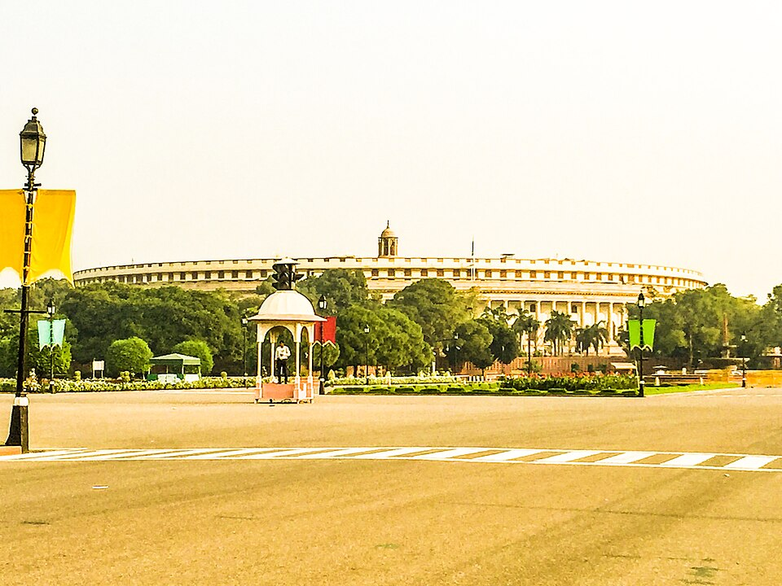

सुधांशु त्रिवेदी ने समाजवादी पार्टी के 2027 घोषणापत्र पर उठाए सवाल
भाजपा नेता सुधांशु त्रिवेदी ने समाजवादी पार्टी के नए घोषणापत्र को महज एक औपचारिकता बताया है। उन्होंने विपक्षी दलों पर वादे पूरे न करने का आरोप लगाया है।
भारतीय जनता पार्टी के राष्ट्रीय प्रवक्ता डॉ. सुधांशु त्रिवेदी ने समाजवादी पार्टी के हालिया घोषणापत्र को लेकर सवाल खड़े किए हैं। उन्होंने विपक्षी दलों पर निशाना साधते हुए कहा कि ऐसे दल केवल चुनावी वादे करते हैं, लेकिन उन्हें अमलीजामा नहीं पहनाते।
डॉ. त्रिवेदी ने भाजपा सरकार के कामकाज का हवाला देते हुए कहा कि पार्टी ने अपने प्रमुख वादों को पूरा किया है, जिनमें धारा 370 हटाना और राम मंदिर का निर्माण शामिल है। इसके साथ ही उन्होंने अन्य राज्यों में विपक्षी दलों के पुराने वादों का जिक्र करते हुए उनकी व्यावहारिकता पर भी सवाल उठाए।
और पढ़ें
 राष्ट्रीय
राष्ट्रीयचेन्नई के कारोबारी वर्द्धमान जैन ने तिरुपति मंदिर को दिया ₹207 करोड़ का सोना
चेन्नई के कारोबारी वर्द्धमान जैन और उनकी पत्नी राधिका जैन ने तिरुपति मंदिर को 121 किलो सोना और हीरे के आभूषण दान किए हैं, जिनकी कीमत करीब ₹207 करोड़ है।
राष्ट्रीयउत्तर प्रदेश विधानसभा चुनाव: एनडीए में सीट शेयरिंग को लेकर सहयोगियों की बढ़ी मांग
उत्तर प्रदेश विधानसभा चुनाव से पहले एनडीए में सीट बंटवारे को लेकर पेच फंस गया है। बीजेपी के चार सहयोगी दल अपना दल (एस), आरएलडी, सुभासपा और निषाद पार्टी अधिक सीटों की मांग कर रहे हैं, जिससे बीजेपी के सामने संतुलन बनाने की चुनौती खड़ी हो गई है।

राष्ट्रीयपरिसीमन और महिला आरक्षण पर कांग्रेस ने सरकार को घेरा, संविधान बदलने का लगाया आरोप
महिला आरक्षण और परिसीमन से जुड़े विधेयक को कैबिनेट की मंजूरी मिलने पर कांग्रेस ने तीखी प्रतिक्रिया दी है। पार्टी ने आरोप लगाया कि सरकार इसके बहाने संविधान बदलना चाहती है और लोकसभा सीटों का मौजूदा संतुलन बनाए रखने की मांग की है।
राष्ट्रीयतमिलनाडु: महिला आईएएस अधिकारी को अश्लील मैसेज भेजने के आरोप में टीवीके विधायक गिरफ्तार
तमिलनाडु में टीवीके विधायक अरुल विग्नेश को एक महिला जिला कलेक्टर को अश्लील मैसेज भेजने के आरोप में शुक्रवार देर शाम पुलिस ने गिरफ्तार कर लिया। इस मामले को लेकर पिछले कई दिनों से राजनीतिक हंगामा चल रहा था।